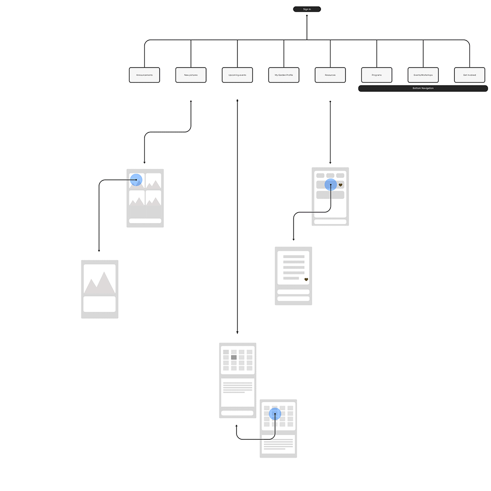

Toronto Urban Gardening
an app to foster interest in urban gardening in Toronto's diverse communities
overview
Urban agriculture is on the rise in Toronto as an effective and affordable mechanism to increase
fruit and vegetable consumption and educate citizens on healthy food guidelines.
Citizens are receptive to the idea of urban gardening but are often not equipped with the resources
and connections to get one started.
could an online platform support citizens in learning and sustaining an urban garden within their property?
research
frankly, i wasn’t if this was worth the endeavour
About the hypothetical platform
What if there were already accessible resources available (Google, etc.)?
Can an online platform be created to foster the interest and growth of urban garden participants?
What needs to be true for participants to join the online platform in the first place?
Is an online platform the best way to reach the goal?
About the citizens who’d use it
Who are the types of people interested in community gardens?
What habits and lifestyles do they have?
What challenges will they face in creating and sustaining a garden?
What do they need to see first in order to stay engaged on the platform?
the answers to these questions began by researching the users and their needs
Wants: to set up and run one urban garden
Needs: guidance on paperwork to get approval from the City, support by the community
Wants: Proof that the growth of UA is positive for the community
Needs: Records/tracking/paperwork of each urban garden
Wants: Information and accessibility to an urban garden
Needs: Education, guidance, support
The relationship was such that users needed tasks completed by each other in order to establish and maintain a community garden.
In order to find out where the platform would be most useful and to which user profile I grouped the respective tasks as activities that required:
a) immediate results (in yellow)
b) lots of time and interaction (in green)
…Ultimately coming to the conclusion that the platform should be a web app focused predominately on the residences, since the time-consuming tasks required changes in policy (updating community garden approval forms) or support beyond the scope of an online platform (direct help from others).
the platform
Defining the goal of the platform required more research into factors like:
Income disparities: its' influence on buying behaviour
Interviews with the community: successful indicators and bottlenecks in establishing an urban garden
Greenest City: example of a successful community garden
residences have 4 major expectations from the platform
1. Accessible: easy for the whole community to use, including inexperienced users of technology
2. Engaging: ability to show and share active events, educational workshops, recent events, etc.
3. Resourceful: residences need easy access to resources on growing and maintaining an urban garden, and the ability to seek help
4. Visual: photos and videos displayed to present the success and engagement within a garden community
expectations help direct the layout of the platform for the best user experience
The expectations are unvarying because it's a direct response to the initial problems that users had. Instead, they help guide the design and layout of content. However the layout is varying, changing often through user feedback and iterations in order to find the best user experience that meets the expectations.
Finding out which features take precedence
I created a chart of users' level of familiarity with the platform and with gardening then listed the tasks each group would want to complete.
For example, users that knew about gardening but were unfamiliar with the platform were grouped seperately from users that did not know anything about gardening but were familiar with the platform.
The common tasks (in purple) that each group wanted to complete first were the main features of the platform.
the layout
I played around with different layouts, envisioning the animation and general feel of the platform. I created a flowchart of all the information and how they would be placed. I focused on accessibility, referencing to WCAG (Web Content Accessibility Guidelines)'s 4 principles: perceivable, understandable, operable, robustness.
my rule: every element must serve a deliberate purpose
Defining navigation and content order
Navigation was at most
two taps to avoid overloading the user:
1 tap to the specific feature
1 tap to view/edit the components of the feature
Defining the home screen
What order will users find the most benefit and engagement with the app?
2. Recieve updates from the Garden Facilitator
And contact the Facilitator
3. See the upcoming event
RSVP immediately to the event, or see more events
4. Interact with the community
Visually invite users to share their gardening experience
5. Access resources
Placed at the bottom because its the least time-sensitive information.
6. Bottom navigation
Easy access to other important content which requires more real estate.
user interface elements
Once the homescreen's navigation and layout were defined, I played with colour pallettes and typography that complied with WCAG, and created the remaining layouts.

Animations as feedback
Screen 1 & 2
To keep the onboarding smooth and simple the user is only asked for their location.
Updating sections are on the users' terms and indicated clearly for each section.
Screen 3 & 4
Content is deliberately placed within one screen, if possible. For example, resources filtered on the same screen. Events for any day drops down from the calendar on the same screen.
Each editable item per section enters from and returns to the right.
Buttons are intentionally large for clear navigation. Fonts can be increased for the visually impaired.
does an online platform support citizens in sustaining an urban garden?
Yes, but not entirely
With little commitment up front, it allows curious residences to
explore the benefits of urban gardening within their respective community
before choosing to participate in one. It's a safe space to learn and connect with
community members, and an immediate way to connect with the head of
the community (the Garden Faciilator).
But no, an online platform is not the
ultimate answer to bring awareness; it is a means to an end and part of a holistic solution
to a complex system of people and organizations that rely on each other.
references
Toronto Urban Growers' AODA Indicators